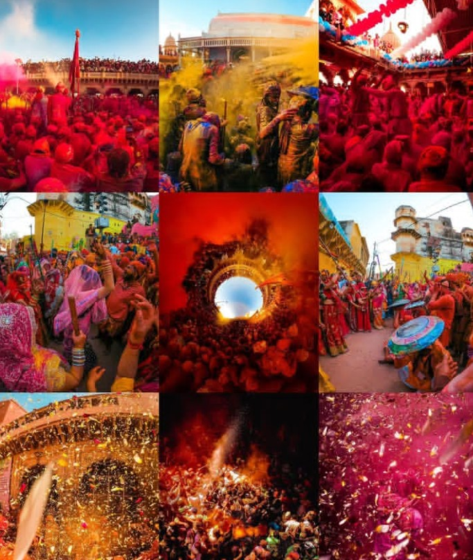
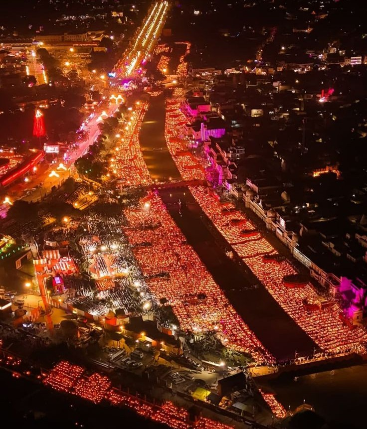
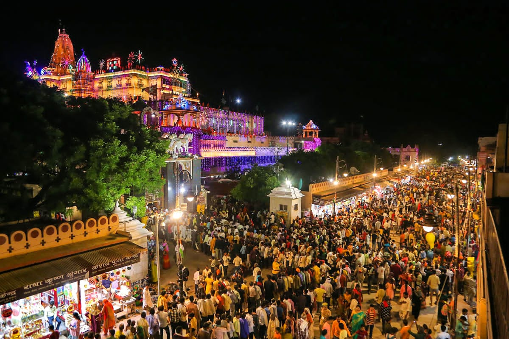
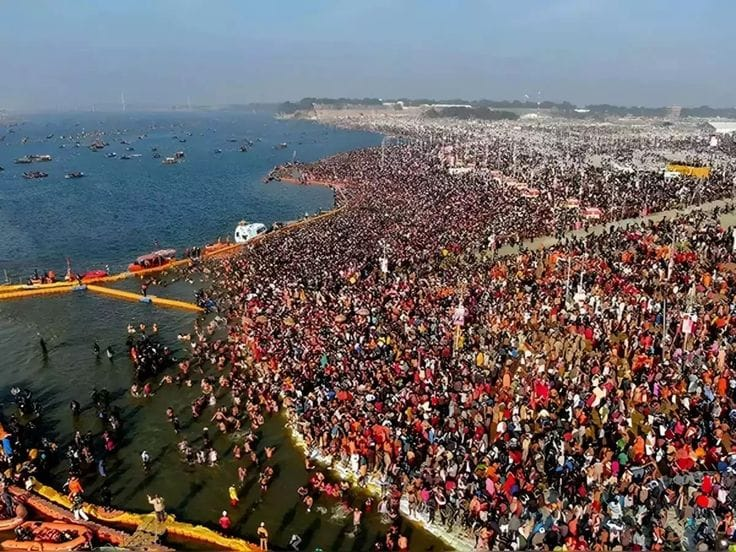
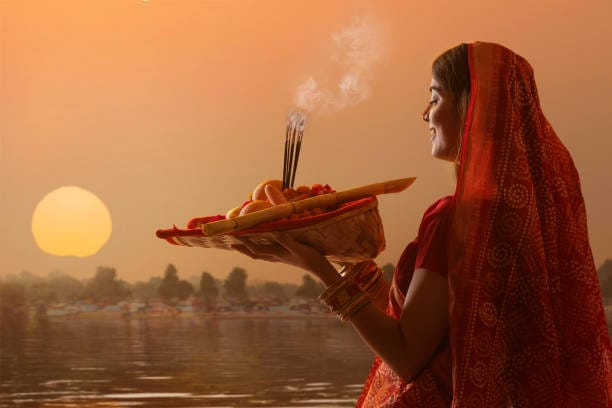
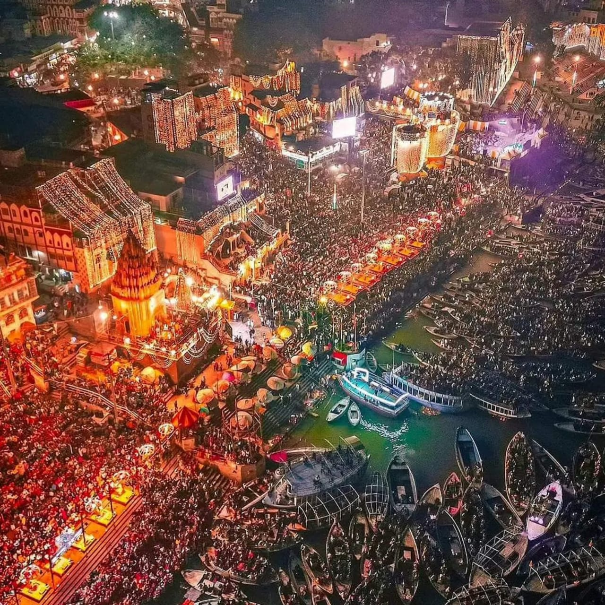
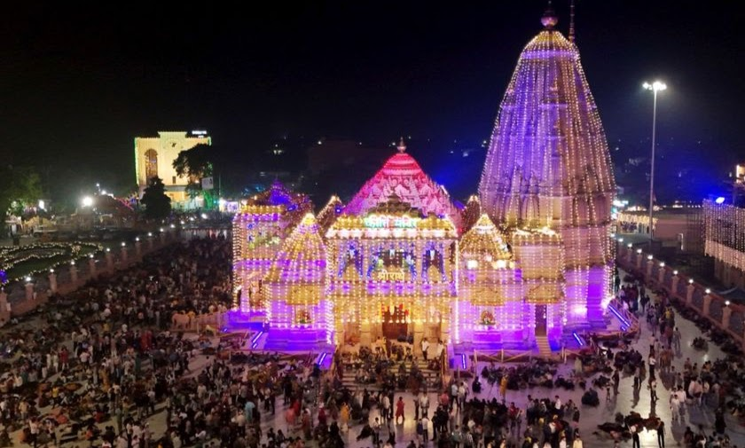

Uttar Pradesh
A Glimpse of the Entire Nation

Holi
Holi is a major hindu festival, also known as "Festivals of Colours," "Love," and "spring". Celebrations are often most vivid and jubilant, especially in Mathura and Vrindavan.
It is a vibrant and joyous two-day celebration that marks the triumph of good over evil and the arrival of spring.
In these cities connected to Lord Krishna, celebrations can last for over a week.
Barsana and Nandgaon, specially, are famous for their unique tradition of Lathmar Holi where women playfully beat men with sticks.
A central legend behind the festival is the story of Prahlad, a devotee of the God Vishnu, and the demoness Holika. When Holika tried to burn Prahlad, she was destroyed by the fire while Prahlad emerged unscathed, symbolizing the victory of rightousness. Celebrations begins with bonfires on the first night, known as Holika Dahan, and culminate on the second day with Rangwali Holi, when people play with coloured powders and waters. The festival is also a time to forget past grievances and repair broken relationships.
The festival also celebrates the change of seasons, marking the end of winter and the arrival of the blossoming spring season.It is a day for forgiving and strenghtening relationships.

Diwali
Deepawali is the "The Festivals of Light" symbolizing the victory of light overdarkness and good over evil, and is most celebrated in Uttar Pradesh at Ayodhya, marking Lord Rama's return with grand lighting and rituals on the Ganges River.
The festival is characterized by the lighting of the countledd diyas(Oil Lamps), symbolizing inner light and the illumination of life. It's also a time new beginnings, home renovations, and auspicious events like the Muhurat trading on the stock exchange, according to the Bussiness Standard.
The Birthplace of Lord Rama's, Ayodya is major hub for Diwali celebrations, honoring Rama's Return after 14 years of exile with Millions of Diyas and elaborate Ram Leela Performances.
The most prominent feature is the illumination of homes, temples and river banks with millions of Earthen lamps. In Ayodhya, Ram Leela performances retell the epic story of Rama's life.

Krishna Janamashtami
Janamashtami is an annual Hindu Festival celebrating the birth of Lord Krishna, the eight incarnation of the God Vishnu. Acoording to scriptures, Krishna was born in a prison in Mathura to Devaki and Vasudev while they were imprisoned by the tyrannical King Kansa. His Birth symbolizes te Victory of Good over Evil.
Many Devotees observe a fast,often without water or with fruits , until midnight, the time of Krishna's Birth. Homes and temples are decorated with flowers, light and Rangoli.
Celebrations often take place over two days and involves various tradition including fasting, decoration, midnight-ceremony, Dahi Handi, Rasleela and Prasad.
As a Lord Krishna's Birthplace, Mathura host grand celebrations. The town where Krishna spent his childhood, Vrindavan is famous for his vibrant Ras Leela performances. The village, Gokul, Krishna was raised by his Foster Parents, celebrates Janamashtami a day after Mathura and Vrindavan.

Mahakumbh
The Maha Kumbh Mela is the World's largest religious gathering, a sacred Hindu Pilgrimage held every 12 years at Prayagraj, where millions of pilgrims take rituals bath at confluence of The Ganges, Yamuna and Saraswati River.
The Magh-Mela is the shorter, annual 45-day pilgrimage in the hindu month of Magh that culminates in similar rituals dips, with both events centered on purification from sins and achieving spiritual liberation.
It is a massive religious festival that take place in India. In Prayagraj, Uttar Pradesh, at the sacred Triveni Sangam the confluence of the Ganges, The Yamuna and Te Saraswati Rivers.
Pilgrims bath in the holy water to purify themselves from sins and break the cycle of rebirth, attaining Moksha.

Chathh Puja
Chhath Puja is a four-day ancient Hindu Festival celebrated in the Part of eastern Uttar Pradesh, honoring The Sun God(surya dev) and his wife, Chhathi Maiyya. Devotees perform strict, sacred rituals including fasting(often without water), offering prayers to the setting and rising Sun while standing in a river or pond, and preparing special offers like Thekuas.
It occurs on the sixth-day of the waxing moon(Shukla Paksha) of the Hindu month of Kartika, falling in October-November. There is also a less common version called Chaiti Chhath celebrated in March and April.
This festival have four day observance, first day is known as Naha Kha in which devotee take a purifying bath in a holy river, second day is known as Kharna in which A strict day-long fast is observed whic is broken by a single, special meal, third day is known as Dhal Arghya in which devotee perform rituals by a river or a pond, offering the setting sun(Pratyusha) with arghya from cane baskets called soops and the fourth day is known as the Bhor Arghya in which this festival conclude with the dawn offering to the rising sun (Usha) , followed by breaking the fast.

Dev Deepawali
Dev Deepawali( or Dev Diwali) is a major festival in"Kashi"(Varanasi) that celebrate the victory of Lord Shiva over the demon Tripurasura and occurs 15days after the main Diwali, on the full moon of the month of Kartik.
The festival marked by the illumination of the Ganga Ghats with millions of Diyas, a spectacular Ganga Aarti, and is time when millions of pilgrims and tourists visit the city.
The Holy city of Varanasi comes alive during Dev Deepawali with millions of Diyas illuminating the ghats of the Ganga, alon side Grand Ganga Aarti ceremonies and cultural Festivals. In Varanasi, Diyas are floated down the River Ganga, symbolizing devotion.
Many Visitors take boat ride on the Ganges to witness the spectacle of the illuminated ghats and the Arti from the river. A Laser light show often helds at Chhath Singh Fort that narrates the region's history and traditions.

Radha Ashtami
Radha Ashtami, also known as Radha Jayanti, is a hindu festival celebrating the birth anniversary of Goddess Radha, the eternal consort of Lord Krishna. It falls on the 8th day (Ashtami) of the Shukla Paksha in the hindu monthof Bhadrapada, which is fifteen days after Janamashtami. The festival honors Radha's divine love and devotion to Krishna, and devotees often fast, chant mantras and hold special pujas to honor her.
The festival symbolizes the selfless and divine love shared between Radha and Krisna, a connection that inspires devotion and joy.
For Some, it is a day for self-awakening and purifying the body and mind by fasting and meditating on Radha's energy. Temples, especially in holy places like Mathura, Vrindavan, and Barsana, host grand celebrations with Kirtans and distribution of Prasadam. Devotees also offers Shringar, new clothes, and Bhog to Radha Ji.
